Rusty Buggy
The Rusty Buggy is a two-seat vehicle with a fuel tank, a dashboard and a holographic garage to upgrade it with weapons, wheels, lights, a trunk and paint.
Driving
The Tinkerer sells the Rusty Buggy item; toolboxes and supply crates rarely hold one. Right click a block with it to place the buggy.
Right click the buggy to get in (2 seats). Look to steer, move forward to drive. Sneak to get out.
A new buggy has a third of a tank. A full tank lasts about 7500 blocks; right click the buggy with a Fuel Canister to add half a tank. The fuel gauge and a bar of lights are on the dashboard.
Hitting a zombie at speed rams it: 1 damage, 6 with the Spiked Bumper. Bosses are never affected by the buggy or its modules.
The hull (100 points) takes half of the zombie hits meant for the riders, and every hit on the buggy. At 0 the buggy is wrecked: repair it in the garage with a wrench.
Modules only work while someone sits in the buggy, except the Warning Lights. One weapon per slot (front, roof, rear) plus the trunk; everything else stacks. A module bought once is yours for good.
The garage
Right click the buggy with a wrench: a holographic garage opens over it, one card per module, dye or service.
Right click: next card. Punch: previous card. Sneak + right click: next category.
Sneak + punch. The card shows the cost and whether you own it already. While you browse, the module blinks on the buggy.
What the panel shows
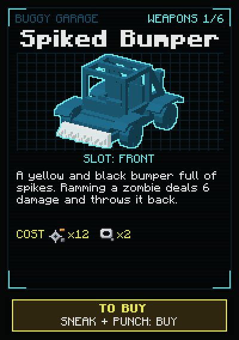
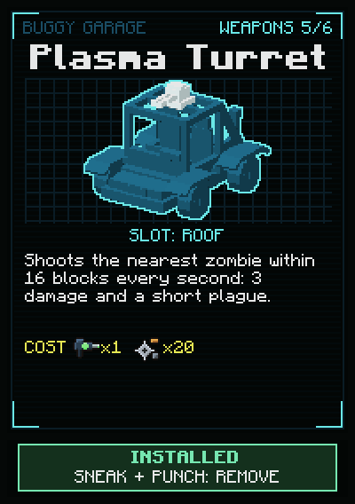
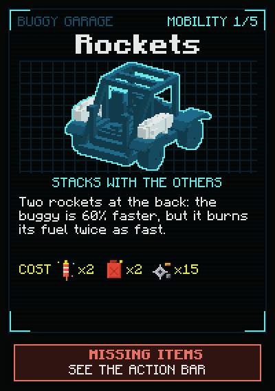
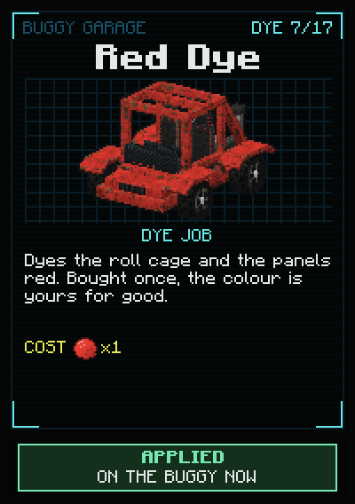
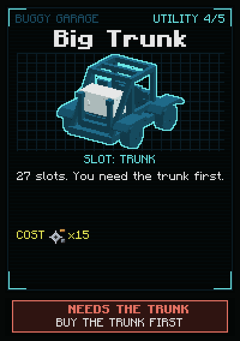
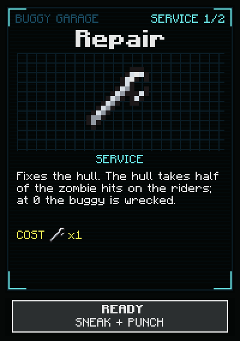
Weapons
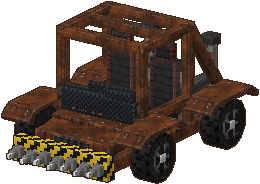
Spiked Bumper
A yellow and black bumper full of spikes. Ramming a zombie deals 6 damage and throws it back.
 12 Scrap
12 Scrap 2 Duct Tape
2 Duct Tape
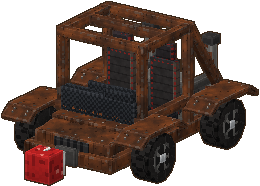
Spring Glove
A red boxing glove on a spring. It punches the zombies in front of you: 3 damage and a huge knock back.
 1 Boxing Gloves8 Scrap
1 Boxing Gloves8 Scrap
Electric Aura
Coils and a battery. Every 2 s, the zombies within 10 blocks take 2 damage and are shocked. Wet ones: double.
 2 Electric Bomb15 Scrap
2 Electric Bomb15 Scrap

Magnet
Small zombies (20 health or less) stick to it and get dragged behind the buggy.
 1 Motion Sensor15 Scrap
1 Motion Sensor15 Scrap
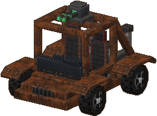
Plasma Turret
Shoots the nearest zombie within 16 blocks every second: 3 damage and a short plague.
 1 Plasma Virus Blaster20 Scrap
1 Plasma Virus Blaster20 Scrap
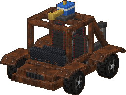
Water Cannon
Blasts the nearest zombie with water: it is pushed back and soaked. Wet zombies take double shocks.
 1 Garden Hose10 Scrap
1 Garden Hose10 Scrap
Mobility
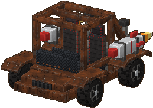
Rockets
Two rockets at the back: the buggy is 60% faster, but it burns its fuel twice as fast.
 2 Fireworks Rocket
2 Fireworks Rocket 2 Fuel Canister15 Scrap
2 Fuel Canister15 Scrap
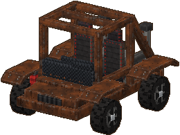
Big Suspensions
Lifts the buggy and unlocks the jump: press jump while you drive.
12 Scrap
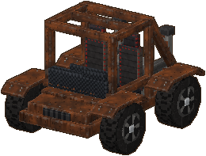
Big Wheels
Huge knobby wheels: the buggy is 20% faster.
10 Scrap
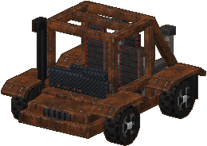
4x4 Mode
Snorkel and mud flaps: the buggy climbs full blocks and steep slopes.
18 Scrap
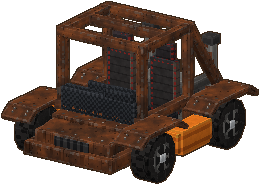
Floaters
Inflatable pontoons: the buggy floats and drives on water, slowly.
 2 Oxygen Tank10 Scrap
2 Oxygen Tank10 Scrap
Utility
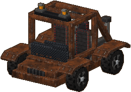
Warning Lights
Every zombie within 25 blocks comes to the buggy (not the bosses). Install: ON. Remove: OFF.
 1 Flare6 Scrap
1 Flare6 Scrap

Headlights
Light up the road at night while someone drives.
 1 Flashlight5 Scrap
1 Flashlight5 Scrap
Trunk
9 slots. Sneak and right click the buggy to open it.
2 Chest8 Scrap
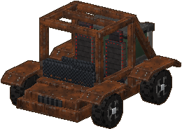
Big Trunk
27 slots. You need the trunk first.
15 Scrap
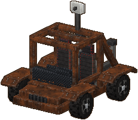
Radar
While you drive: the zombies around you by direction, and the nearest boss.
1 Motion Sensor10 Scrap
Paint
Every paint costs one vanilla dye; Bare Rust is free.
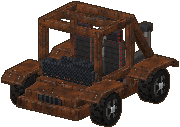
free
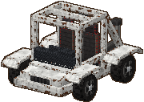
1 White Dye
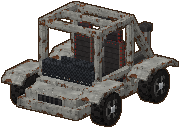
1 Light Gray Dye
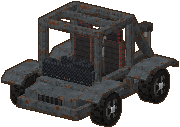
1 Gray Dye
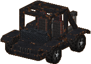
1 Black Dye
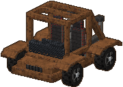
1 Brown Dye
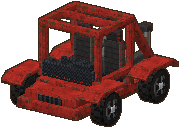
1 Red Dye
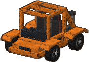
1 Orange Dye
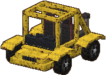
1 Yellow Dye
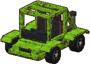
1 Lime Dye
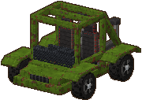
1 Green Dye
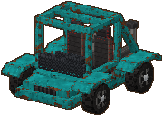
1 Cyan Dye
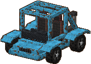
1 Light Blue Dye
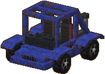
1 Blue Dye
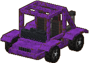
1 Purple Dye
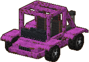
1 Magenta Dye
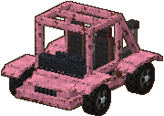
1 Pink Dye
Service
Repair
Repairs the whole hull of a wrecked or damaged buggy.
 1 Wrench
1 Wrench
Pack Up
Packs the buggy back into its item, with its modules and paint (empty the trunk first).
free
Where to find it
30 scrap Tinkerer · Supply crate 4.0%, Toolbox 3.0%